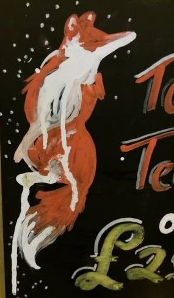
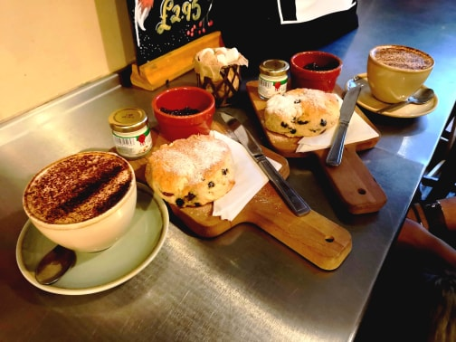

Cafe of the Month
At the bottom of Pelham Street, adorned with draped greenery and twinkling fairylights, is Fox Cafe. A wonderful independent eatery, this cosy foxhole contains rows of benches and snug tables surrounded by orange and white paraphernalia.
'Fox' is not merely a cute name: the white walls display paintings of foxes and house small crocheted foxes, creating an intriguing emporium of all things fox.(I think we've said fox enough now!)

From the moment you step over the threshold you are warmly welcomed by the staff, who find you a table and come back to take your order. The cafe is always busy, but not in a disruptive way. There are regulars and small families, people on their lunchbreaks or working on their latest novels. The staff are attentive but not overbearing.
Behind the counter display there are freshly made cakes of the day: beautiful three-tiered Victoria sponges and towering chocolate cakes. However, we have a soft spot for their afternoon tea deal; a fresh fruit scone and a hot drink of your choice for only £5.45.  The scone is well-presented, warm, and absolutely delicious, with small pots of strawberry jam and clotted cream. The coffee is also good; strong and bitter, with no need for any sugar. Sourced by East London roastery, Union Coffee, this brand isn't local, but it is good.
Fox Cafe sells more than just sweet things. They have an array of breakfast and brunch, salad and lunch options. You can also choose this quirky cafe for a spot of middle-class cheese and wine tasting. With several mouth-watering sharing (or not!) boards to choose from, as well as a vast selection of wines, this is a great place to unwind, whatever the time of day.
With the price, pleasant aesthetics and atmosphere, you can't ask for a better respite on a Nottingham afternoon.